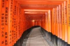

Quioto, Onde o Tempo Dança
criado pelo ChatGPT
criado pelo ChatGPT
Mergulhe nos cenários deslumbrantes de Quioto, uma cidade rica em história e beleza natural. Abaixo, você pode ver uma imagem destacada de Higashiyama, um dos bairros mais antigos da cidade. Além disso, oferecemos mais três fotos incríveis de pontos icônicos, e você pode explorar cada uma delas clicando nos links correspondentes.
Cada clique vai substituir a imagem atual, permitindo que você tenha uma visão mais detalhada de cada um desses lugares encantadores.

